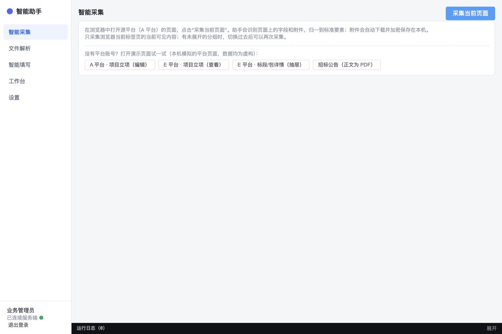
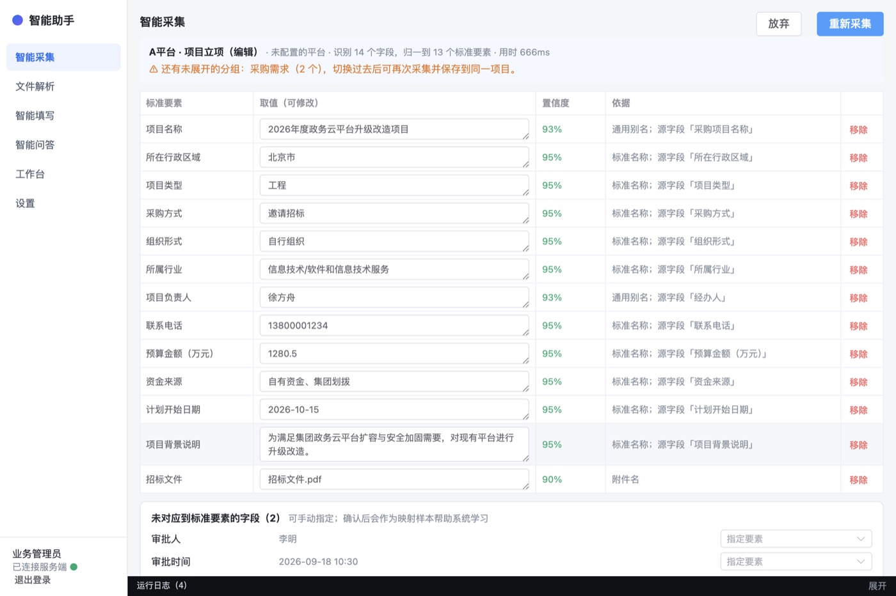
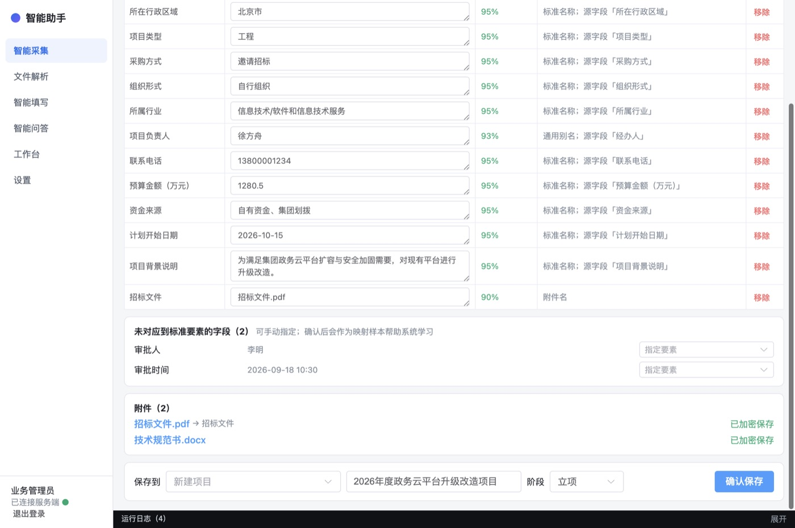
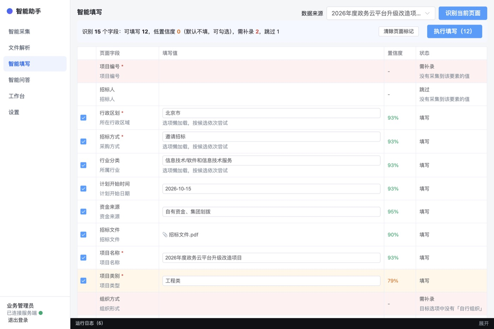
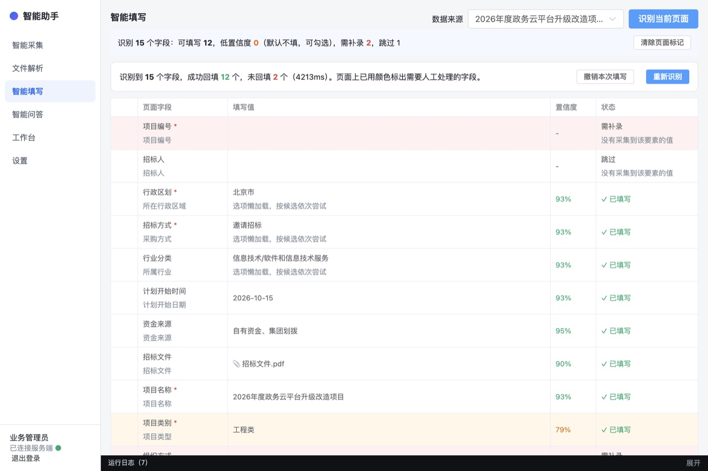
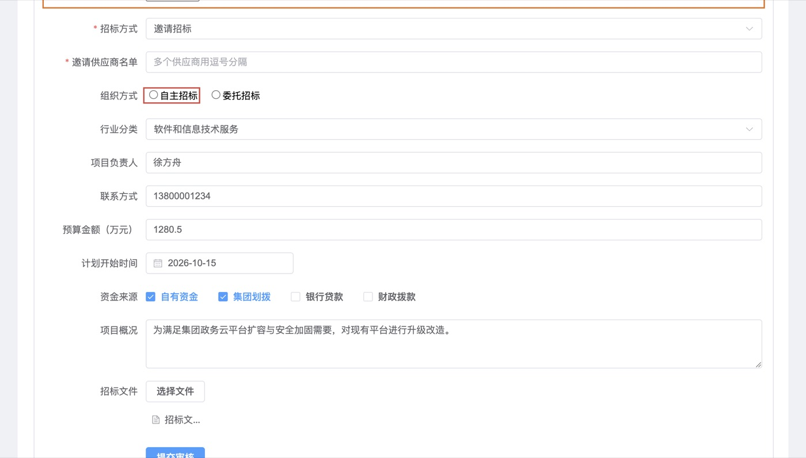
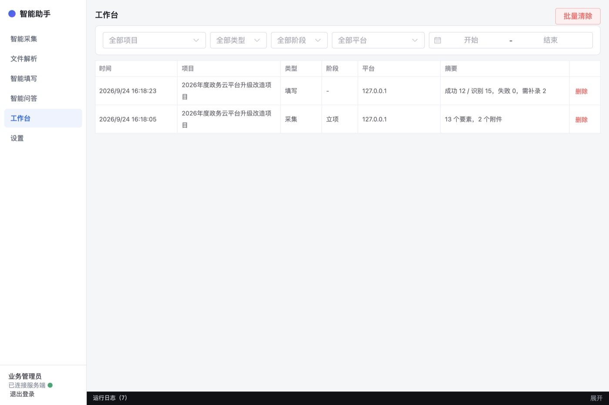
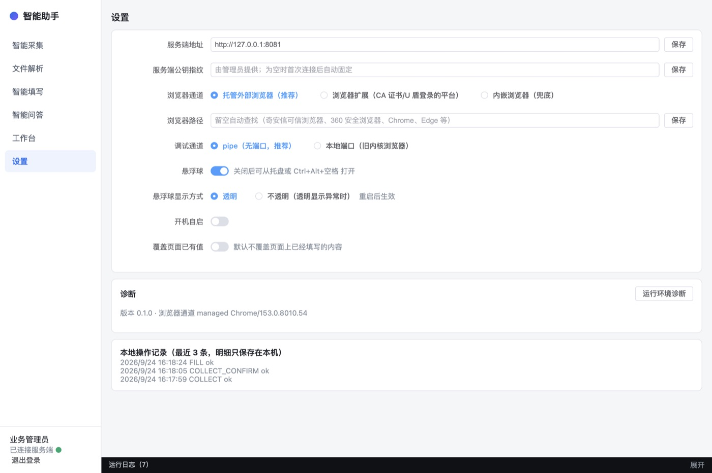

中化商务智能助手 使用手册
认识智能助手
智能助手是装在电脑上的一个小工具。它能读懂招采平台页面和招标文件，把项目信息整理好，再帮你填到另一个平台的表单里。
典型用法：把 A 平台的项目录到 B 平台
第一次使用
安装包由信息部门提供，服务端地址已经预置好。
- 安装并启动。启动后屏幕边上会出现一个圆形“助手”悬浮球，同时打开工作台窗口。
- 设置本地保险箱 PIN（部分电脑才有这一步）。如果系统不支持自动保管密钥（部分麒麟/统信电脑），会要求设置一个至少 6 位的 PIN，输入两次后点 设置并解锁。以后每次启动都要输入这个 PIN。
PIN 忘了就无法打开本机保存的数据，请务必记住。 - 登录。输入用户名和口令，点 登录。登录框下方显示服务端地址；如果信息部门让你修改，点 修改，填好后保存。
- 准备浏览器。第一次采集或填写时，助手会自动打开一个浏览器窗口，并提示“浏览器刚刚启动”。请在这个窗口里登录招采平台、打开要操作的页面，再回到助手重新点一次按钮。这个浏览器窗口会记住你的登录状态。
打开助手
| 方式 | 怎么用 |
|---|---|
| 悬浮球 | 单击展开工具条（智能采集 / 文件解析 / 智能填写）；按住拖动可以换位置；右键可打开工作台、设置、隐藏悬浮球、退出。悬浮球不会抢走浏览器的焦点，可以放心边看页面边点。 |
| 快捷键 | Windows / 麒麟 / 统信：Ctrl + Alt + 空格；Mac：⌘ + ⌥ + 空格。直接打开工作台。 |
| 托盘图标 | 任务栏（Mac 为顶部菜单栏）右侧的小图标。单击打开工作台，右键可显示/隐藏悬浮球或退出。 |
工作台左侧是五个页面：智能采集、文件解析、智能填写、工作台、设置（智能问答暂未开放）。左下角显示你的姓名和“已连接服务端”状态；底部“运行日志”可以展开，看到每一步做了什么。
智能采集
从源平台（例如 A 平台）的项目页面读取信息，核对后保存成一个“项目”。
- 在浏览器里打开源平台的项目页面（编辑页、详情页、公告页都可以）。
- 在助手的“智能采集”页点 采集当前页面。
- 查看结果。每一行是一个标准要素（助手统一使用的字段名），右边是取值、置信度和依据（来自页面上的哪个字段）。
- 取值不对，直接在框里改。改过的行不再标颜色。
- 标“冲突”的行，下面会列出其他候选值，点一下就采用。
- 不需要的行，点 移除。
- 检查“未对应到标准要素的字段”。如果其中有你需要的信息，用右边的“指定要素”下拉选一个对应要素。你的指定会帮助助手以后自动识别这个字段。
- 检查“附件”。显示“已加密保存”表示已经下载到本机；下载失败的点 重试。点附件名可以打开查看。
- 在底部选择“保存到”：新建项目（默认用项目名称命名）或已有项目，选择阶段，点 确认保存。
没有平台账号：用演示页面试一试
“智能采集”页下方有几个演示页面按钮（A 平台立项编辑、E 平台立项查看、E 平台标段详情抽屉、招标公告）。点一下，助手会在浏览器里打开本机模拟的平台页面，并直接采集。演示页的数据都是虚构的，适合熟悉操作或给别人演示。



- 助手只读取浏览器当前标签页里看得见的内容。信息分在几个页签里时，逐个点开采集，都保存到同一个项目即可。
- 页面上打开了弹窗或侧边抽屉（如“标段/包详情”）时，助手只采集弹窗里的内容，不会把背景页的信息混进来；结果顶部会显示弹窗标题和“只采集了当前打开的弹窗”。
- 公告正文如果是网页里嵌的 PDF，助手会自动读取 PDF 里的信息并入结果（需要多等一会儿）。PDF 和页面不一致时以页面为准，并标为“冲突”让你确认。
- 有标红或低置信度的行还没核对就保存，会弹出提醒。
- 同一信息在页面上出现多次且取值不同（如“所在行政区域”和“项目地址”），助手取最可信的一个，其余列为候选并标“冲突”，请选定后再保存。
文件解析
手上只有招标文件、公告等文件时，用它提取项目信息。
- 在“文件解析”页点 选择文件，可以多选、可以多次添加。支持 PDF、Word、Excel、WPS、TXT、JPG、PNG，单个文件不超过 100MB。
- 点 开始解析，等待显示“完成”。扫描件需要识别文字，时间会长一些。
- 选择抽取方式后点 抽取：
- 按浏览器当前页面需要的字段抽取：先在浏览器打开要填写的表单，助手只找这个表单需要的信息。
- 按阶段抽取：选择一个阶段（如“公告”），提取这个阶段的全部要素。
- 核对结果。每个值都注明出自哪个文件、第几页、原文是什么。文件里找不到的信息助手不会猜，会列在“未找到”里，需要你补录。
- 选择保存到的项目；需要把原文件存进项目时勾选“原文件加密保存到项目”，点 保存并去填写，助手会直接跳到“智能填写”。
智能填写
把项目信息填到目标平台（例如 B 平台）的表单里。
- 在浏览器里打开目标平台要填写的表单页面。
- 在助手的“智能填写”页，从“数据来源”选择项目，点 识别当前页面。
- 查看填写计划。上方汇总“可填写 / 低置信度 / 需补录 / 跳过”各有几项，同时浏览器页面上需要你处理的字段已经标出颜色。
- 勾选的行会被填写；低置信度的行默认不勾，你确认值没问题后可以勾上。
- 填写值可以直接修改。
- 点 执行填写（N），等待“正在填写…”完成。
- 回到浏览器核对：补录标红的字段，检查标橙的字段，确认无误后自己点平台上的提交按钮。



填错了怎么办
- 点 撤销本次填写，把字段恢复成填写前的样子（要在同一个页面上操作）。已上传的附件、原来为空的下拉框无法撤销，需要手动处理。
- 页面有变化（例如切换了选项后多出新字段）时，点 重新识别 再填一次。
- 页面上的颜色标记不想要了，点 清除页面标记。
工作台
查看和管理本机保存的所有项目与记录。
- 按项目、类型（采集 / 文件解析 / 填写）、阶段、平台、日期筛选。
- 点某一行，在右侧查看详细内容：要素和取值，或每个字段的填写结果；附件可以 查看 或 另存为。
- 选中一个项目后，可以点 用该项目填写 直接去填表，或 删除项目。
- 批量清除 按当前筛选条件删除记录；没有筛选时删除全部。

设置
| 设置项 | 说明 |
|---|---|
| 服务端地址 / 服务端公钥指纹 | 由信息部门提供，一般不用改。 |
| 浏览器通道 | 托管外部浏览器（推荐）：助手自己打开一个浏览器。浏览器扩展：用于 CA 证书/U 盾登录的平台，需要先安装扩展。内嵌浏览器：前两种都不行时的备用方案。 |
| 浏览器路径 | 留空会自动查找奇安信可信浏览器、360 安全浏览器、Chrome、Edge 等。 |
| 调试通道 | 默认 pipe。浏览器内核较旧、打不开时改为“本地端口”。 |
| 悬浮球 / 显示方式 | 可以关闭悬浮球。悬浮球显示成黑块等异常时，改为“不透明”，重启后生效。 |
| 开机自启 | 开机后自动在后台运行（不弹工作台）。 |
| 覆盖页面已有值 | 默认关闭：不覆盖表单里已经填写的内容。 |
| 诊断 | 遇到问题时点 运行环境诊断，把结果发给信息部门。 |

颜色与状态速查
| 看到的 | 意思 | 你要做什么 |
|---|---|---|
| 置信度绿色（≥ 90%） | 助手很有把握 | 扫一眼即可 |
| 置信度橙色（70%–90%）/ 行底色浅黄 | 基本正确，但建议核对 | 核对取值 |
| 置信度红色（< 70%）/ 行底色浅红 | 把握不大，或有冲突 | 仔细核对或修改 |
| 冲突 | 同一信息出现了不同的值 | 从候选值中选一个，或手动改 |
| 已改 | 你手动改过 | — |
| 填写 | 会被自动填写 | — |
| 低置信度 | 默认不填 | 确认后可勾选填写 |
| 需补录 | 必填但没有数据，或目标平台没有对应选项 | 在页面上手工填写 |
| 跳过 | 非必填且没有数据、已有内容不覆盖、控件不可编辑 | 按需处理 |
| 页面上红框 | 需补录或填写失败 | 手工处理 |
| 页面上橙框 | 已填写但置信度不高 | 核对 |
| ✗ 页面拒绝该值 | 平台没有接受这个值（例如选项不存在或被禁用） | 手工选择 |
| ✗ 找不到控件 | 页面在识别后发生了变化 | 点“重新识别” |
数据与安全
- 项目信息和附件只存在你的电脑上，而且是加密的；别人拷走文件也打不开。
- 采集和填写时，页面上的内容会发到公司内网服务端做识别，识别完即丢弃，不保存。
- 文件解析会上传文件到内网服务端，解析完成立即删除。
- 服务端只会收到不含业务内容的信息：例如“某平台的‘招标方式’字段对应‘采购方式’”，以及操作次数、成功率等统计。这些信息用来让助手越用越准。
- 助手记录你的操作日志（采集、填写、打开附件等），明细保存在本机，只把摘要上报用于安全审计。
- 本地记录默认保留 90 天；删除后会彻底擦除。PIN 遗忘后数据无法恢复。
常见问题
点“采集当前页面”后提示“浏览器刚刚启动”
这是第一次使用时的正常提示。在弹出的浏览器窗口里登录平台、打开要操作的页面，再点一次按钮。
提示“当前页面没有识别到表单字段或附件”
确认浏览器里最前面的标签页是你要操作的页面，且页面已完全加载。如果打开了多个浏览器窗口，先点一下目标页面让它处于最前。
采集到的字段不全
助手只读取看得见的内容。点开页面上的其他页签或“展开”，再采集一次，保存到同一个项目。
某个字段总是“需补录：目标选项中没有…”
说明两个平台对同一选项的叫法不同。可以先手工选择；同时告诉配置管理员，配置好对应关系后以后就能自动填写。
“所在行政区域”显示成“福建省/福州市/鼓楼区”这样的路径
行政区域按省 / 市 / 区县三级保存，路径能准确区分同名的区县（福州、南京都有鼓楼区）。填写时助手会按目标平台的选项自动选到对应的级别；目标只有省份时会选“福建省”，并提示“只能选到这一级”。
行政区域只写了“鼓楼区”，助手没认出来
全国有好几个“鼓楼区”，只凭区名无法确定是哪一个，助手不会乱猜。请在取值里补上省市，例如“福建省福州市鼓楼区”，或直接写“福州市鼓楼区”。
填写结果显示“页面拒绝该值”
目标平台不接受这个值，常见原因是选项被禁用、选项名称不同或日期格式限制。请在页面上手工选择。
左下角显示“服务端不可用”
网络断开或服务端维护中。此时可以查看工作台里的本地记录，但采集、解析、填写、问答暂不可用。
提示“服务端身份校验失败（公钥指纹不一致）”
为防止连到伪造的服务端，助手拒绝了这次连接。请不要自行修改设置，立即联系信息部门。
选了“浏览器扩展”但提示扩展未连接
确认扩展已安装并启用，点浏览器上的扩展图标查看是否显示“已连接客户端”；没有的话点“重新连接”，并确保助手正在运行。
悬浮球显示成黑色方块或看不见
在设置里把“悬浮球显示方式”改为“不透明”，然后重启助手。
忘记了本地保险箱 PIN
本机保存的项目和附件无法恢复。请联系信息部门重置客户端，重新采集需要的数据。
管理后台总览
管理后台通过浏览器访问（地址由信息部门提供）。首次登录如果还在用初始口令，会强制修改：新口令至少 8 位，包含大写、小写、数字、特殊字符中的三类。
| 角色 | 能看到的菜单 | 日常工作 |
|---|---|---|
| 配置管理员 | 运营看板、平台管理、要素字典、枚举集、映射配置、页面模板、模板候选、发布与回滚、系统配置 | 审核候选、维护映射、发布 |
| 知识库管理员 | 运营看板、知识库、问答反馈 | 上传/更新资料、处理“答案有误”的反馈 |
| 系统管理员 | 用户与权限、系统配置 | 建用户、启停、重置口令 |
| 安全管理员 | 用户与权限 | 分配角色和知识库权限标签 |
| 审计管理员 | 审计日志 | 查询审计、校验审计链完整性 |
系统管理员、安全管理员、审计管理员三个角色不能由同一个人兼任（三员分立）。
让助手越用越准
这是配置管理员最重要的日常工作，建议每周做一次。
业务人员每次确认采集结果或填写成功，助手都会把“某平台的某字段对应哪个要素”记下来（不含业务内容）。同一对应被确认 3 次以上且没有矛盾时，就会出现在“模板候选”里等你审核。
- 看运营看板找重点。“各平台填写成功率”从低到高排序，“采集低置信度占比”从高到低排序，排在前面的平台最需要配置。
- 审核候选。进入“模板候选”→“待审核”，检查每条“字段名 → 要素”是否正确，勾选后 批量通过，不对的 驳回。通过后系统会自动生成该平台的字段和选项对应关系（平台不存在时会自动创建）。
- 生成页面模板（可选，效果最好）。在“已通过”页底部，页面按“域名 + URL 模式”列出，选一个点 生成 / 合并页面模板。这个页面已经有模板时，只会把新字段合并进去，不会重复生成。然后到“页面模板”页核对（可以修改，见 页面模板维护）并点 启用。启用模板的页面，所有字段都能直接对应，不用大模型判断。
- 发布。到“发布与回滚”点 发布当前配置，写上说明。发布后业务人员下一次采集或填写就会生效。
平台与映射配置
新增平台
- “平台管理”→ 新增平台。
- 填写名称和域名规则（每行一个，如
ebid.example.com、*.example.com、example.com/bid*），选择页面组件库；如果是公司内部招采平台，打开“内部平台”。 - 保存。平台只能停用，不能删除。
配置字段和选项的对应关系
- “映射配置”→ 顶部选择平台。
- “字段别名”页签：左边是标准要素，右边填这个平台上对应的字段名，多个用逗号分隔。点 保存字段别名。
- “枚举别名”页签：选择枚举集（如“组织形式”），在每个标准选项后填该平台上意思相同的选项名（如“自行组织”后面填“自主招标”）。点 保存枚举别名。
- 点 去发布，在“发布与回滚”页发布后生效。
页面模板维护
页面模板记录“某个平台的某个页面上，每个字段对应哪个标准要素”，命中后识别最快、最准。
每个页面用域名 + URL 模式来识别，例如 ebid.example.com/bid/{id}/edit?action=edit：网址里的项目编号等变化的部分写成 {id} 或 {v}，所以同一类页面（不同项目的编辑页）共用一个模板。页面上多出联动字段、切换页签，都不影响识别。同一平台的同一个页面只能有一个模板。
修改模板
- 进入“页面模板”，可以按平台筛选。点某个模板的 编辑。
- 可以修改名称、阶段（采集命中该模板时直接用这个阶段）、URL 模式。
- 在“字段映射”里逐行核对：页面字段名（页面上显示的名称）、控件类型、对应的标准要素。对应错的直接改；页面上有、模板里没有的，点 添加字段；不需要的点 删除。标准要素留空表示忽略这个字段。
- 点 保存，版本号加 1。修改要到“发布与回滚”页发布后才生效。
新建模板
点 新建模板，选择平台，填写名称、URL 模式和字段映射。URL 模式可以从“模板候选”的页面列表里复制。如果这个页面已经有模板，会提示直接去修改已有的那个。
要素字典
- 要素是助手统一使用的字段，以公司内部招采平台的字段为准。在“要素字典”页可以按名称、编码、别名搜索，按阶段筛选。
- 新增要素时填写：编码（大写字母、数字、下划线，保存后不能改）、名称、所属阶段、类型（枚举类要选枚举集）、通用别名（各平台常见叫法，每行一个）、说明（写清业务含义，助手判断时会参考）。
- 要素的修改保存后立即生效，不需要发布，也不能回滚，请谨慎操作。要素只能停用，不能删除。
- “行政区域”已经是省 / 市 / 区县三级（全国行政区划数据）。各平台叫法不同（如“福建/福州”）时，在“映射配置”的枚举别名里配置。
- “枚举集”页维护标准选项。树形选项（如行业）可以“加子项”；改名会同步更新子项路径；有子项的选项不能删除。删除选项会让已配置的平台选项对应失效。
知识库维护
- 目录。左侧目录树分“业务知识”（法律法规、政策文件、管理制度、行业规范、业务流程）和“系统知识”（招采平台、财务报销、请假、邮件）。目录可以设置权限标签，为空表示所有人可见。
- 上传。选中目录，需要时选择生效日期，点 上传文档（可多选）。状态依次为“等待解析”“解析中”，最后显示“已入库 N 个切片”；失败时显示原因。相同文件不能重复上传。
- 更新。新版本用 替换；过时的用 废止（不再参与回答，原文保留）；不要的 删除。
- 修正。回答不准时，点文档的 切片，找到对应段落修改后 保存修正。
- 看反馈。“问答反馈”页筛选“答案有误”，据此补充或修正资料。
更换向量模型后，需要点顶部的 重建索引。
账号、配置与审计
用户与权限
- 系统管理员：新建用户（用户名、姓名、部门、初始口令，默认为普通用户），可停用/启用、重置口令。
- 安全管理员：在用户行点 分配角色，勾选角色、填写知识库权限标签。
系统配置
| 配置 | 默认 | 作用 |
|---|---|---|
| 自动填写阈值 | 0.9 | 高于此值显示绿色 |
| 高亮阈值 | 0.7 | 低于此值默认不填 |
| 按钮黑名单 | 提交、发布、送审、审核、确认、确定、保存、签章、报名、上报、完成 | 填写时禁止点击的按钮 |
| 填写等待时长 | 文本 120ms、选择 250ms、最长 2500ms | 页面反应慢、联动字段填不上时适当调大 |
| 本地记录保留天数 | 90 | 客户端自动清理 |
| 候选所需确认次数 | 3 | 越小候选出现越快，但误差越大 |
| 问答记录保留天数 | 180 | |
| 解析结果保留分钟 | 30 | |
| 悬浮球外观、客户端版本 | — |
修改后，客户端在下次登录或 30 分钟内自动获取。
审计日志
审计管理员可按用户名、操作类型（如 LOGIN 登录、ADMIN_ 后台修改、CLIENT_ 客户端操作）、日期查询。点 校验哈希链 检查审计记录是否被篡改，结果显示“完整”或列出异常记录。